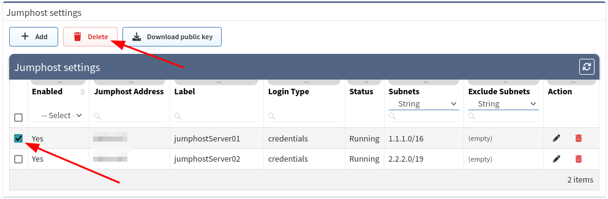
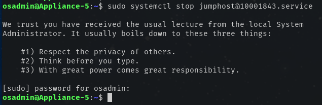
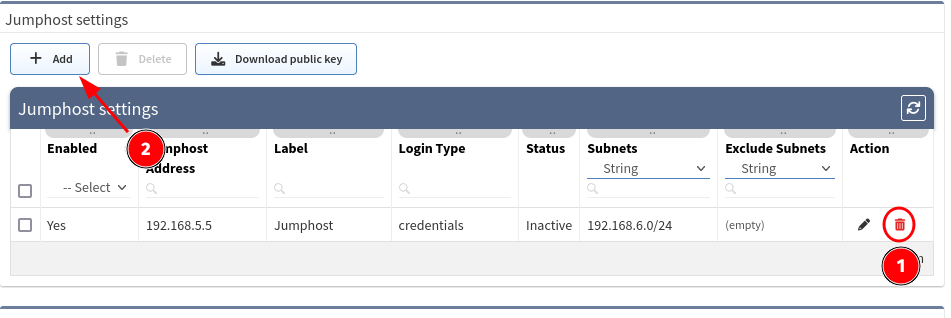
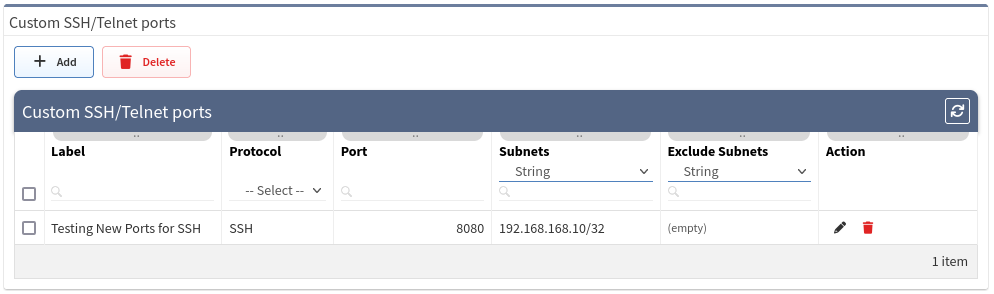

SSH/TELNET
Fine-Tune SSH/telnet CLI Parameters
The IP Fabric's discovery is primarily using Command Line Interface (CLI) to discover network elements. The CLI Parameters can be found in Settings Advanced SSH/TELNET.

Network Device Login Timeout
Timeout before the logging prompt is received. It may take longer for remote branches over low-speed lines or overloaded devices to respond.
Network Device Session Timeout
Too many Command Timeout errors during the Discovery process may indicate that Network device session timeout is too short and the session is closed before the response arrives. It may be necessary to increase this timeout.
Maximum Number Of Parallel Sessions
To prevent flooding your network with too many SSH/TELNET sessions set Maximum number of parallel sessions. This setting can be also helpful if the AAA server (TACACS/Radius) has a limit of parallel AAA requests for users.
In rare cases, the Cisco ISE or similar systems may rate limit the command authorization. When there are too many authorization failures and Cisco ISE is in place, try to limit the number of parallel sessions down to 10 and steadily increase.
Basic Failure
How many times to retry a connection for any error, except authentication failure.
Authentication Failure
Authentication failure can occur even if a user is authorized to Login. For example, this may happen when an AAA server is overloaded or an authentication packet is lost.
Command Authorization Failure Retries
If you see many examples of Authentication error during the Discovery process, please adjust Authentication failure and Command Authorization Failure retries.
Example Of Error Message In Connectivity Report
According to the summary of issues in the very first completed snapshot, the CLI Settings can be adjusted. Here are some of the most common errors and adjustments:
| Error | Error Type | How To Mitigate |
|---|---|---|
| connect ETIMEDOUT XX.XX.XX.XX:22 | Connection error | Received no response from the destination. |
| connect ECONNREFUSED XX.XX.XX.XX:22 | Connection error | The connection to the destination is being blocked by an access-list or firewall. |
| All configured authentication methods failed | Authentication error | Unable to authenticate to the destination host |
| Authentication failed | Authentication error | Unable to authenticate to the destination host |
| Authentication failed - login prompt appeared again | Authentication error | Unable to authenticate to the destination host |
| SSH client not received any data for last 120000 ms! cmd => show vrrp | e #^$ | Command timeout | The command 'show vrrp | e #^$' timed out. Increase device session timeout. |
| Can't detect prompt | Command timeout | Unable to detect CLI prompt. Increase network device login timeout. |
| Command "enable" authorization failed, tried 2x | Command authorization failure | The command wasn't authorized. Increase command authorization failure retries or increase the timer value (ms) |
Setting Up Jumphost
Jumphost allows to set-up a connection to the server which can be used as a proxy server for discovery purposes. IP Fabric uses an SSH tunnel established by python on the client and the server side.
We successfully tested IP Fabric against jumphosts with the following python versions:
| Python version on the jumphost | |
|---|---|
| 2.7 | tested |
| 3.4 | tested |
| 3.5 | tested |
| 3.6 | supported |
| 3.7 | supported |
| 3.8 | supported |
| 3.9 | supported |
| 3.10 | tested |
tested -- jumphost was successfully tested, but it is not officially supported by the underlying SSH tunnel project
supported -- jumphost was successfully tested, and it is officially supported by the underlying SSH tunnel project
We strongly recommend using python 3.6-3.9 on the jumphost side as it is officially supported by the underlying SSH tunnel tool project.
Warning
Please bear in mind, that once the connection is established, it will be enabled permanently, until disabled or removed! If there are any network issues, IP Fabric software will try to establish a connection periodically.
Important
In Discovery Seed, at least one IP address behind the Jumphost has to be provided as a starting point.
Adding New Jumphost
- Open jumphost settings, using item Settings Advanced SSH/TELNET
-
At the bottom of the page, please select + Add button

-
Fill in all necessary data

- Label - the name for configuration (mandatory)
- Jump host Address - IP address of FQDN name (mandatory)
-
IPv4 subnets - subnet in CIDR representation, allows adding more than open, separated with spaces (mandatory)
Warning
If you use
0.0.0.0/0or another subnet that includes the IP address of IP Fabric, please make sure to add IP Fabric IP address/subnet to "Exclude IPv4 subnet". Otherwise, the connection to IP Fabric will be lost and you will not be able to access IP Fabric GUI/CLI and it will require manual intervention to fix.
- Exclude IPv4 subnets - subnet to exclude in CIDR representation, allows to add more than open, separated with spaces (optional)
- Login type
- Use credentials - required to provide username and password
- Use SSH keys - if you copied the ssh public key to the proxy server, it wont require providing a password (please jump to the SSH key configuration section)
- Username - Username for authentication (mandatory)
-
Password - password for authentication (mandatory if Use credentials is used) i.e., refer to the picture below.
Username and Password character restrictions
Username must start with
A-Za-zand can contain onlyA-Za-z0-9.Password can contain only the following characters
A-Za-z0-9.,/-_@%^:=+
- Click + Add button
-
If a connection is open, you will see the Running status in the Jumphost list

SSH Key Configuration
Info
To avoid using a password for authentication, you can add the ssh key to the proxy server.
-
Download the ssh key from Jumphost settings

-
Save
jumphost-public-key.pub -
Copy file content to
authorized_keysfile of the user that will authenticate with Jumphost server. Please follow official documentation at https://www.ssh.com/ssh/authorized-key -
Restart
sshdservice to apply settings -
If the key has been copied you can use the option Use SSH keys' instead of 'Use credentials
Disabling Jumphost Connection
-
Edit configuration that needs to be disabled, i.e.\

-
Change the setting to Disabled,
-
Click the Update button

Remove Jumphost Configuration
-
On the Jumphost servers list, select the server you want to remove
-
Click Delete button

Jumphost Known Issues
Non-TCP Discovery
Only TCP connections work through the jumphost.
Traceroute with ICMP is not supported so the discovery process might not be able to get over the unreachable parts of the network (for example sites separated by the providers network).
Because of this, you will have to add at least one IP address of a network device from each site to the Discovery seeds settings.
IP Fabric Is Not Accessible After Saving Jumphost Configuration
If you can't open the main GUI or SSH to the IP Fabric machine, the subnet/IP address of the IP Fabric machine was most likely included in the jumphost configuration.
To fix this issue, you have to have a direct access to the virtual machine CLI from a hypervisor, the password for osadmin user account, and do the following:
-
Login with
osadminaccount to the virtual machine CLI -
Filter out the jumphost services with
systemctl | grep jumphostcommand. Each configured jumphost has its own ID.
-
Stop the jumphost service with the command
sudo systemctl stop jumphost@xxxx.service, confirm theosadminpassword
-
Check that the jumphost process is inactive with
systemctl status jumphost@xxxx.servicecommand
-
IP Fabric GUI should be accessible by now.
-
Login into the IP Fabric main GUI with your regular account and go to Settings Advanced SSH/Telnet.
-
Make a screenshot or copy the settings of the old jumphost and then delete or edit the jumphost settings.

-
Put IP address/subnet of the IP Fabric machine to the exclude IPv4 subnets or edit the IPv4 subnets so it does not contain the IP address of IP Fabric.

Info
If IP Fabric becomes inaccessible via GUI or SSH again, repeat the previous steps and again edit the jumphost configuration.
Custom SSH/Telnet Ports
Info
Custom SSH/Telnet ports settings enable the discovery process to use different ports for connecting. The standard for SSH is port 22 and 23 for Telnet.
In the following example we configure the discovery process to use port 8080
for SSH connections to 192.168.168.10:

As a result of such configuration, we would create a new item under the Custom SSH/Telnet ports configuration, which will be applied to every new snapshot created by IP Fabric.

Telnet/SSH URL Handler On MS Windows 7 And Later
If you want to be able to connect directly to a device from the IP Fabric web interface, you need to register a Telnet/SSH URL handler. You will be touching Windows Registry, please, be sure that you know what you are doing, have appropriate backups, and are comfortable in doing so.
Backup Windows Registry
- Click
Start, typeregedit.exein the search box, and then pressEnter - In Registry Editor, click File Export
- In the Export Registry File box, select the location where you want to save the backup copy, name your backup file, and click Save
Putty
Download Putty
- Go to https://www.chiark.greenend.org.uk/~sgtatham/putty/latest.html
- Download
Putty - This tutorial expects Putty in
C:\Program Files (x86)\putty.exe
Register Telnet/SSH URL Handler
- Go to https://gist.github.com/sbiffi/11256316
- Download
putty.regfile - Edit path to Putty if differs from
C:\Program Files (x86)\putty.exe - Download
putty.vbs(save it toC:\putty.vbsor change this path inputty.regabove) - Edit path to Putty if differs from
C:\Program Files (x86)\putty.exe - Launch
putty.regto associatessh://andtelnet://to this script
SecureCRT
Download SecureCRT
SecureCRT is not free software. To obtain SecureCRT license please visit https://www.vandyke.com/products/securecrt/
Register Telnet/SSH URL Handler
- Download securecrt.reg
- Edit path to SecureCRT if differs from
C:\Program Files\VanDyke Software\SecureCRT\SecureCRT.exe - Launch
securecrt.regto associatessh://andtelnet://to this script